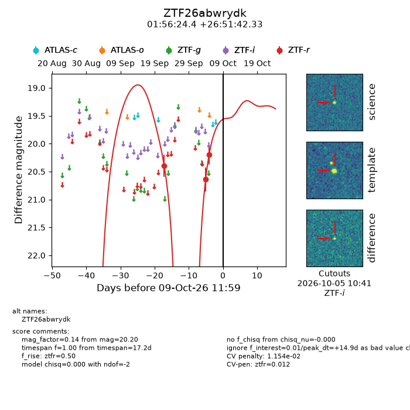
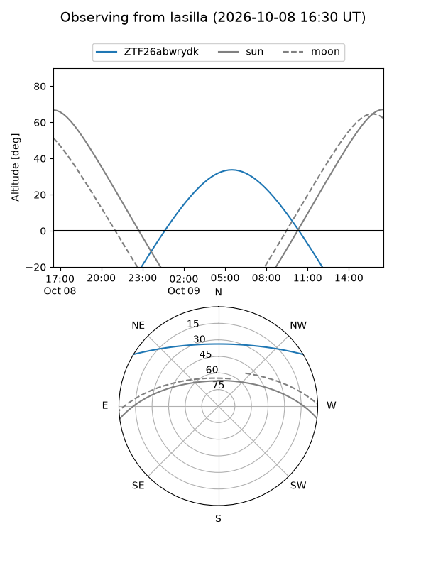
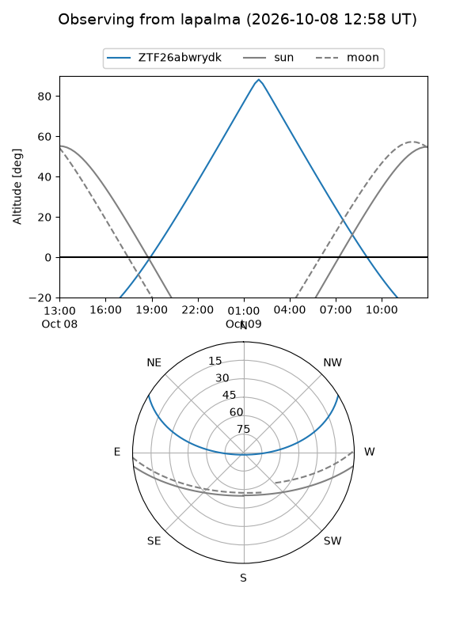
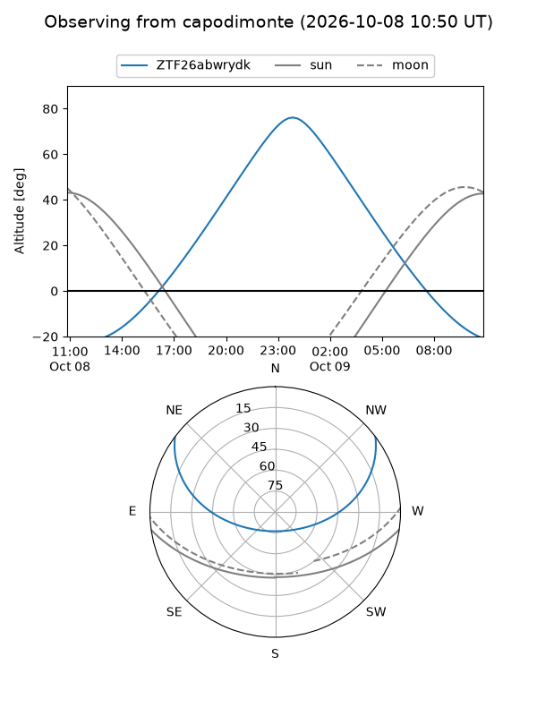
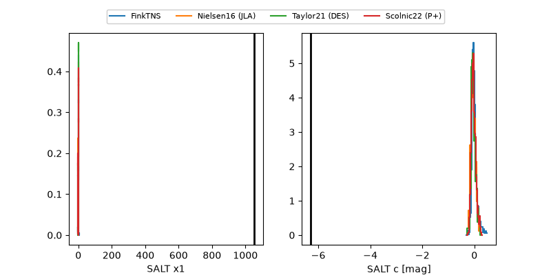

ZTF26abwrydk
Target ZTF26abwrydk at 2026-10-09 12:01
Aliases and brokers:
FINK-ZTF: ztf.fink-portal.org/ZTF26abwrydk
Lasair-ZTF: lasair-ztf.lsst.ac.uk/objects/ZTF26abwrydk
ALeRCE-ZTF: alerce.online/object/ZTF26abwrydk
Direct TNS query: direct search
alt names
ZTF26abwrydk (ztf,fink_ztf)
Coordinates:
equatorial (ra, dec) = 29.1015,+26.86176
equatorial (HMS+DMS) = 01:56:24.37,+26:51:42.33
galactic (l, b) = (140.4047,-33.79605)
Flags:
peak dt: +14.9
likely cv: !!
Photometry:
last ztfr=20.20
3 ztfr detections
Lightcurve

Visibility



Additional plots
